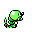

#010
Caterpie
Bug
Its short feet are tipped with suction pads that enable it to tirelessly climb slopes and walls
Base stats Total 225
HP45
Attack50
Defense45
Speed45
Special40
Details
- Species
- Worm
- Height
- 1'00"
- Weight
- 6.0 lb
- Catch rate
- 255
- Base exp
- 53
- Growth
- Medium Fast
Level-up moves
LevelMoveType
StartTackleNormal
StartString ShotBug
Lv 7Pin MissileBug
Lv 12TwineedleBug
Lv 14Bug BiteBug
Lv 31X ScissorBug
Evolution
TM / HM
Tmhm